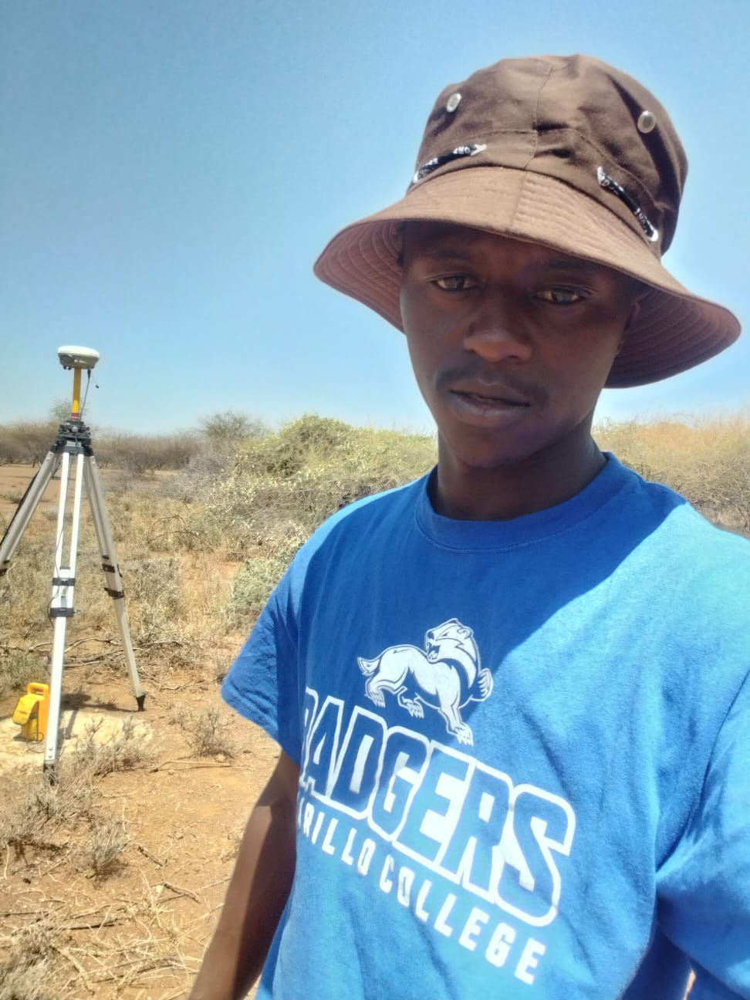

WELCOME TO MY PORTFOLIO
I TURN GEOSPATIAL DATA INTO CLEAR, INSIGHTFUL, AND POWERFUL MAPS.
EXPLORE
This portfolio showcases my work in Geographic Information Systems (GIS), Remote Sensing, and Spatial Analysis, where technology and spatial thinking come together to solve real-world problems. I hold a Bachelor of Arts in Spatial Planning from Jaramogi Oginga Odinga University of Science and Technology. Through my academic training and personal projects, I have developed strong expertise in geospatial technologies and spatial analysis.
My approach to geospatial work combines technical analysis with practical problem solving. I believe that maps and spatial data should not only display information but also support informed decision-making. From data collection and processing to visualization and interpretation, I focus on building spatial solutions that are both analytically sound and visually clear. My goal is to communicate complex geospatial information in ways that stakeholders can understand and act upon. Through this portfolio, I aim to demonstrate my growing expertise and my passion for using geospatial technologies to better understand our world and support smarter decision-making across various sectors.
GEOGRAPHIC INFORMATION SYSTEMS (GIS) · REMOTE SENSING ANALYSIS · SPATIAL DATA ANALYSIS · SATELLITE IMAGE INTERPRETATION · CARTOGRAPHY AND MAP DESIGN · PYTHON FOR GEOSPATIAL ANALYSIS · LAND USE AND ENVIRONMENTAL ANALYSIS
Address: 252-50207
Phone: 0745354853
Email: cauchybj@gmail.com